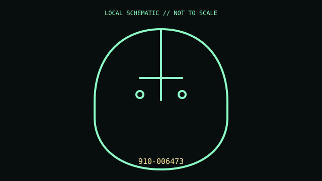

[ MICE AND TRACKBALLS // IDENTIFIED COMPONENT ]
Logitech Lift Vertical Ergonomic Mouse
Right-handed vertical mouse with a 57-degree orientation, quiet wheel, and programmable controls.

MODEL IDENTIFICATION: Exact model / identifier: 910-006473. Confirm label, package suffix, region, and revision against manufacturer documentation.
Model specifications
| Catalog subcategory | Mice and trackballs |
|---|---|
| Exact model / ID | 910-006473 |
| Physical mechanism and primary specifications | Optical sensor up to 4,000 DPI; Bluetooth LE or Logi Bolt USB receiver; one AA battery; four buttons plus wheel; 108 × 70 × 71 mm. |
| Host, interface, and driver caveats | Advanced remapping and profiles require supported Logi Options+ software. 910-006473 is graphite/right-hand SKU; left-hand and color variants differ. Logi Bolt is not Unifying. |
| Revision identification | Record the complete printed SKU/PID, hardware revision, regional layout, and supplied accessories; similarly named variants may use different interfaces, drivers, or components. |
Preservation and service notes
Wipe soft-touch areas and sensor window dry; avoid solvents that degrade coatings. Remove AA cell during storage and preserve receiver if supplied.
Record unit condition, accessories, host OS, software/firmware version, and test conditions separately from manufacturer-published specifications.
Primary manufacturer documentation
- Logitech Lift product pageManufacturer product or support documentation; verify exact model and regional revision against the device label.
- Logitech Lift supportManufacturer product or support documentation; verify exact model and regional revision against the device label.
Support pages can change; preserve the applicable manual and its revision with the physical equipment record.